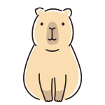

問1
(1)上の3つのリストを横並びにして、ul領域内(緑色の部分)で、両端に余白が無い状態で左右均等配置してください。
(2)その後、margin-left を使用し、ulリスト左側に画面幅20%分の余白を設定してください。
※ body,nav要素ともに width : 100% ; が設定されています。

問2
上のカピぞうの写真を、親要素内の上部から20%、左側から10%の位置に来るように
position プロパティを使用して配置してください。
※親要素は水色の領域です。